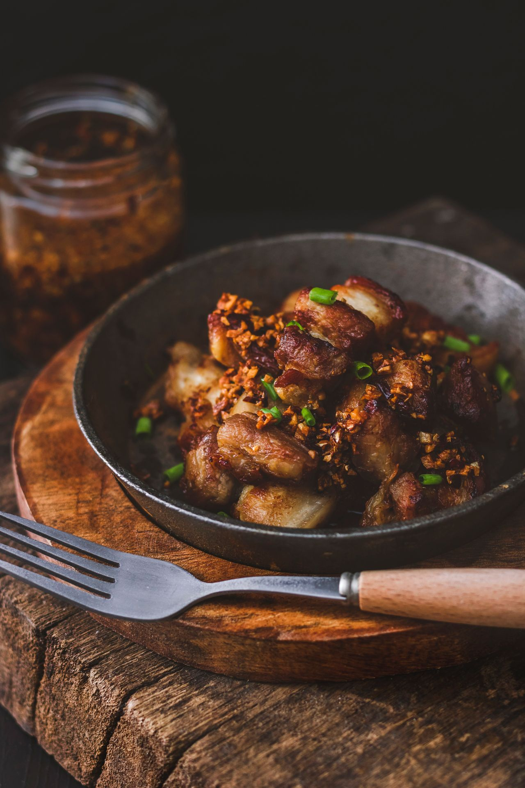

Sisig is an iconic Filipino dish that is fiercely loved across the Philippines as the ultimate pulutan (beer food) and a mainstream dinner favorite. The term "sisig" originally referred to a sour salad of green fruits or chopped meats used as a remedy for hangovers and nausea, dating back to a 1732 Kapampangan dictionary. The modern sizzling version we celebrate today was born in the 1970s in Angeles City, Pampanga, popularized by Lucia "Lucing" Cunanan, famously known as the "Sisig Queen." She transformed cheap, discarded pig ears and cheeks into a culinary masterpiece that eventually earned Angeles City the title of the "Culinary Capital of the Philippines."
The flavor profile of sisig is a smoky, intensely savory explosion of textures that targets every taste bud with a blend of fatty, sour, and spicy elements. It consists of finely chopped pork face and ears that undergo a rigorous three-step preparation process: boiling to tenderize, grilling over charcoal for a deep smoky char, and finally frying. The meat is tossed with sharp red onions, fiery bird's eye chilies, and tangy calamansi juice, all bound together by the rich creaminess of pig brain or dynamic modern alternatives. Served on a blistering hot cast-iron plate, it delivers a delightful crunch and sizzle with every bite.